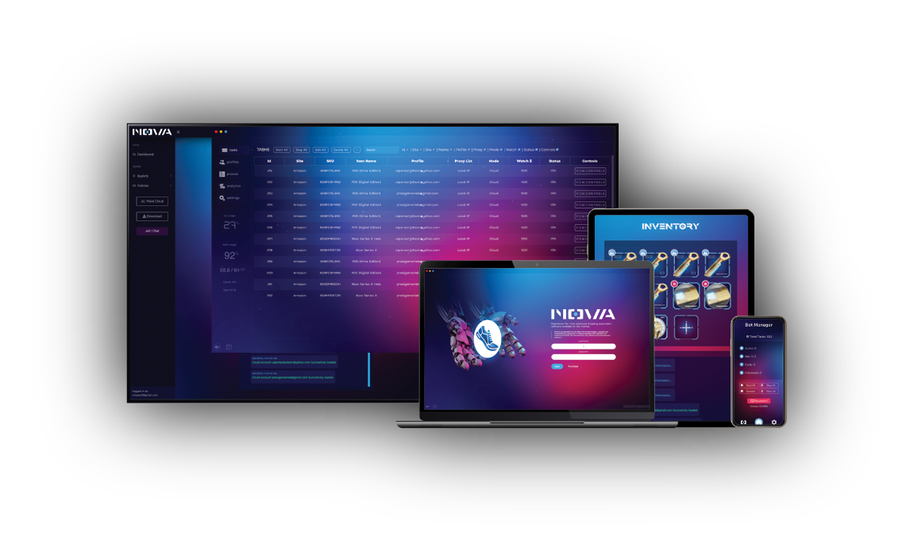
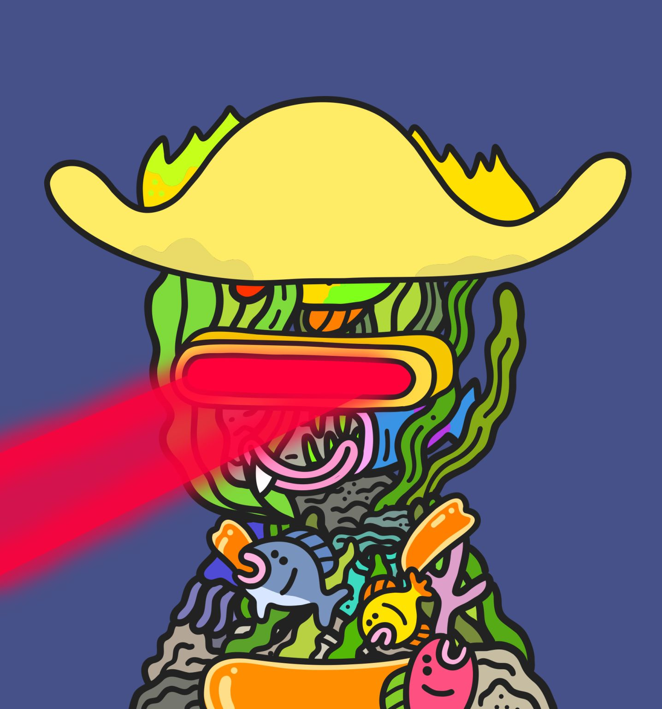
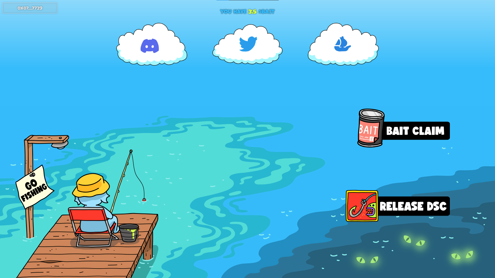
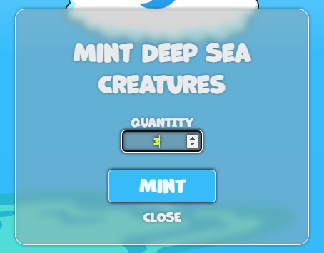

Noah Hirschfield
Projects & Work
-
Huvr
Co-founded and engineered the website and software for a startup which uses a digital business card to create the future of networking.
Users can transfer their contact information via NFC and our website with a tap.
Huvr is mainly used for networking events and conferences in replace of traditional business cards. Huvr transfers real-time contact information and allows users to update their information on the website at any time without a new purchase.
Huvr website -
Nova Bot
Full stack development within a small team to create an application with electron serving 3,000+ customers. The software let users automatically purchase electronics that were in high demand in the easiest way possible. These items were difficult to acquire manually such as PS5's and NVIDIA Graphics Cards.
Users checked out over $40 million worth of products automatically through Nova.
Nova WebsiteWe later pivoted the software to automatically purchase Amazon products that had 100% off coupons. Users purchased nearly $1,000,000 worth of products for free through Nova. They either donated, gave gifts, or sold these items for profit.
Featured in Forbes Article -
Common Ground (School Senior Project)

Common Ground is a mobile application that I and a group of 4 others worked on for our project during our last semester of school. We created it in React Native and TypeScript.
Common Ground Presentation/Demo
Common Ground is a social application where users can find good places to meet up with friends at a restaurant.
Users can create groups, join groups, then set preferences and the app generates a recommendation of a nearby restaurant that fits the group's preferences.
Web3
-
Deep Sea Creatures (ERC721A Contract)
Contracted to create the solidity contract for the Deep Sea Creatures collection which is the official mutant version of the Fishy Fam collection
The smart contract was built on the ERC721A standard using Solidity, Truffle, and Ganache.
Etherscan contract link
Custom requirements were given to me to develop a collection that can be minted with their custom ERC-20 $BAIT token. Fishy Fam holders were able to mint a Deep Sea Creature by spending 1 $BAIT. Minters had the option to burn their Deep Sea Creature and be returned 0.5 $BAIT to try and get a better creature or use elsewhere. -
Deep Sea Creatures dApp
Contracted to create the dApp for the Deep Sea Creatures collection.

The dApp was custom built with NodeJS, Express, WalletConnect, and Web3js.
The dApp allows users to connect their wallets and mint Deep Sea Creatures with their $BAIT token.
Users could also burn their Deep Sea Creatures and be returned 0.5 $BAIT. -
Old Fishy Fam Website
Created a landing page for the fishy fam collection after their mint. This contained their roadmap details as well as a page for holders to connect their wallets and enter their giveways.
Fishy Fam Twitter